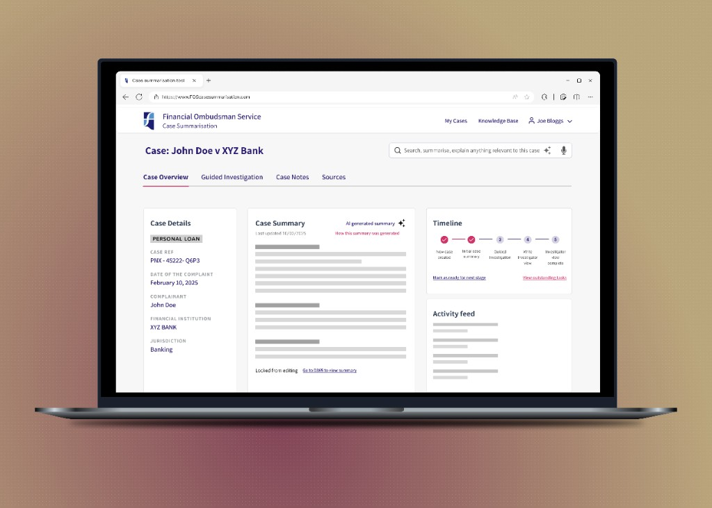
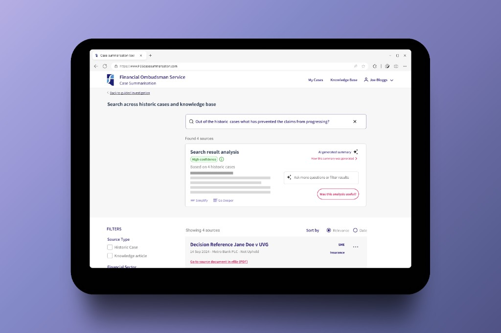
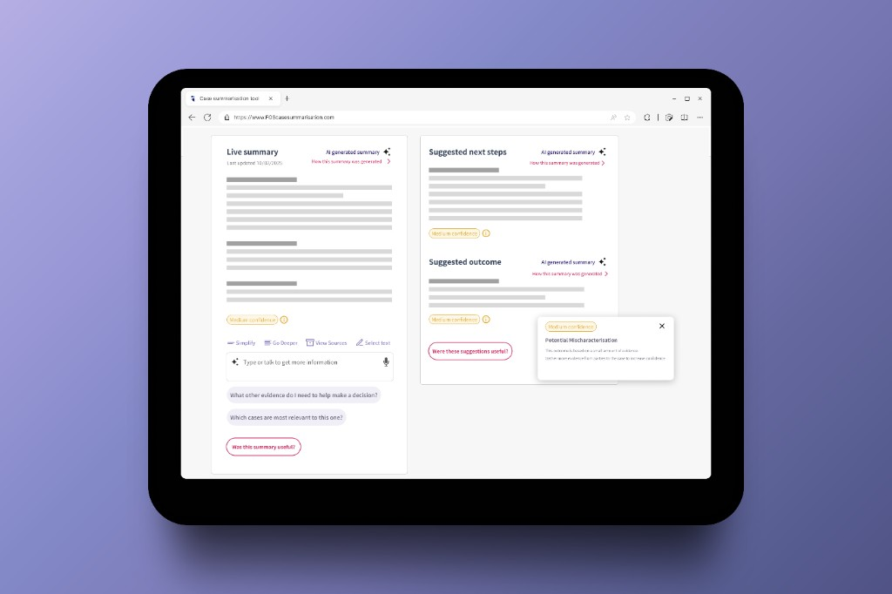

Financial Ombudsman Service
designing for AI.
Nothing here shipped. Pitch exploration for regulated case work: where AI earns space on the screen, how uncertainty reads without wrecking trust, and how every claim stays inspectable. Annotated tablet mocks below.
This page is the Financial Ombudsman–only view. The combined BA & FOS pitch is the full paired write-up; for BA only, see British Airways. More experiments on AI explorations.
Case summarisation for investigators: two interface bets.
This pitch stays close to people doing case work: high volume, dense evidence, and the need to move between “what happened here” and “what does precedent look like.” The design work was not to slap a chat window on a legacy grid. It was to decide where AI earns space on the screen, how to signal uncertainty without undermining trust, and how to keep every claim inspectable.
Intelligent case search explores natural language across historic cases and the knowledge base, with a search result analysis block placed deliberately above the raw list so synthesis is the headline act, not an afterthought. Live summary splits the investigator view between a running summary, suggested next steps, and suggested outcome, each labeled as AI output with the same explainability pattern (“How this summary was generated”) and calibrated confidence states. Pitch only: nothing here shipped.

Case overview: investigator view with AI summary, timeline, and activity.
Design decisions beside the UI
Tablet exports from the pitch. Width is capped around 1024px so low-resolution PNGs are not stretched full-width on big monitors. For real sharpness on Retina, replace files with ~2048px-wide exports from Figma and keep the same cap: the browser will downscale and use the extra pixels. Key design notes sit beside each mock.
Semantic search across cases

Historic search: hierarchy, trust band, grounding.
Live summary workspace

Live summary: split columns, uncertainty, depth controls, feedback.
Pitch takeaways: case intelligence
This FOS direction stayed at pitch stage, but it’s a sharp place to practise trust in AI, explainability, and balancing automation with human agency in regulated workflows. The combined pitch also covers British Airways booking (BA-only page).
Final thoughts on
designing for AI.
- Automation with transparency. If the product summarizes, ranks, or shortcuts work, the UI should show what happened in plain language: provenance, scope, and confidence where it matters, not hide it behind a sparkle and a paragraph nobody can check.
- Let people choose AI, and choose out. The non-AI path stays visible: full lists, manual filters, investigator-first layouts. Switching to “recommended” or assistive modes should feel like a deliberate toggle, not the only door in.
- Don’t be pushy. Nudge quietly: confirm intent before personalization, avoid piling “smart” defaults on every step, and treat assistance as something the user can ignore without penalty. Pushy AI reads as a funnel, not a partner.
Looking for things that went live?
This page is pitch work; for shipped projects see Case Studies.